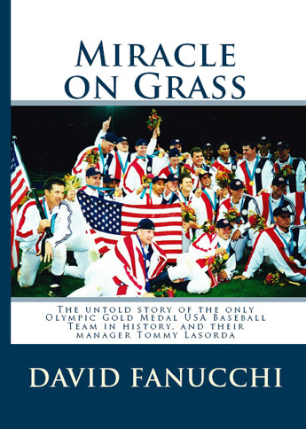

Alumnus publishes book on USA Olympic Baseball team
by Amber Whiteside
Q-and-A with David Fanucchi, Chico State alumnus and author of “Miracle on Grass.” The Chico State Journalism and PR department honored Fanucchi in the 2009 Public Relations Hall of Fame.
“Miracle on Grass” is the true story of the 2000 USA Olympic Baseball team who won the gold medal in Sydney, Australia.
Q: Why is this story important?
A: Well, first of all, it is my belief that they are the greatest team that USA Baseball has ever put together, in the history of the organization. It’s hard to argue against that, based on what they accomplished. Not only are they the only Olympic baseball team to win an official gold medal for the United States, but they may end up being the only one forever, unless the sport gets reinstated into the games someday.
On top of all that, their story is not very well known, and I wanted to create a larger spotlight on how they pulled off this great victory. I think a lot of people might know that the USA Baseball team won the gold medal in 2000, but not many people know how they did it. The entire story deserves to be told.
Q: What inspired you to write this book?
A: I had been thinking about it for several years, but got caught up in my full-time job, having kids, and raising a family. But then in 2010, USA Baseball had a 10-year reunion of the team and everybody involved, and seeing all the guys again really sparked the whole idea for me. I loved hearing how this moment in time changed the lives of all the players and what it has meant to everyone, and I knew that would give me a great base to work with.
Q: What was the process like to get your book published?
A: I needed to know that USA Baseball, as an organization, was going to be behind my efforts – especially if I was going to start calling MLB [Major League Baseball] executives and teams, asking if I could interview players and coaches.
It was also good to know that if I did come up with something worthwhile, that they would be willing to help me market the idea. I went ahead and wrote it, even though I didn’t have a publisher. I knew I needed to commit to doing it without knowing its success.
Q: How has a job in public relations led you to publish a book?
A: I worked in PR and sports media relations for 19 years and was the director of communications for USA Baseball for seven years. I had writing in the back of mind for a while and my original goal was to do sports writing. Working as the press officer for the Olympic team was such a special experience, it was hard to top. I was very fortunate to be given that experience to write about. You never really think of [writing a book] actually happening because it takes so much to get there.
Q: How did your education at Chico State lead you to your success? Were you a part of The Orion or TGC? If so, how did experiences in those organizations help shape you?
A: I had two internships in television, KRON-TV and KHSL-TV. Those were my first experiences with major league sports. My senior year of college interning at KHSL-TV showed me what it is like to be immersed in the media. I also worked for The Orion as a sports writer for a year. I had an opinion column as well that helped me again with my creative side. Then I found a job in media relations for a minor league.
Q: What advice would you give to those who want to pursue a similar career?
A: It is not a field you get into to be rich. It has to be a job because you are passionate about it.
You still have to start at the bottom and work your way up. It doesn’t matter if you were the editor-in-chief of The Orion; once you graduate you will still start at the bottom. Stay persistent and persevere through the negative comments. You have to have thick skin when you go out into the job-hunting world. Stick to your goals and the right opportunity will present itself when it presents itself.
Everything you can do at Chico State besides classes can really shape you. I have to credit classes and professors as well for my writing background. Laying out the entire book made me go back to the basics I learned in journalism.
Q: What is the main message you would like people to take away from reading your book?
A: If you’re passionate about American pride and the Olympic spirit, this book is for you. It’s not just a sports story or a baseball story, it’s about a group of men coming together to all pull on the same rope, and an inspirational manager who leads the charge. I hope that readers will enjoy some of the stories that happened off the field, as much as the ones that happened on the field, because in both cases, they are great.
I tried to include as many of the players’ personal memories as I could. It’s really fun stuff if you are into learning about how a team gets put together from start to finish, even if you know the outcome.
Q: What is your next step after the book is available for purchase?
A: Our original idea was to pitch it to Hollywood for a movie. You have to have it in print first; manuscript, screenplay or another form. Our long-term goal is to make this story into a movie. We want publicity first off and have it out there for the holidays. We want to try to get as much attention as we can in hopes of making the book into a movie.
Q: When and where will your book be available for purchase?
A: The book will be available on Amazon.com and on my own personal e-store, which we will publicize on USABaseball.com as well as my own website at GoldMedalPR.com. Fans can also follow the book’s progress and me on my Facebook page: Gold Medal PR
Photo by David Fanucchi.